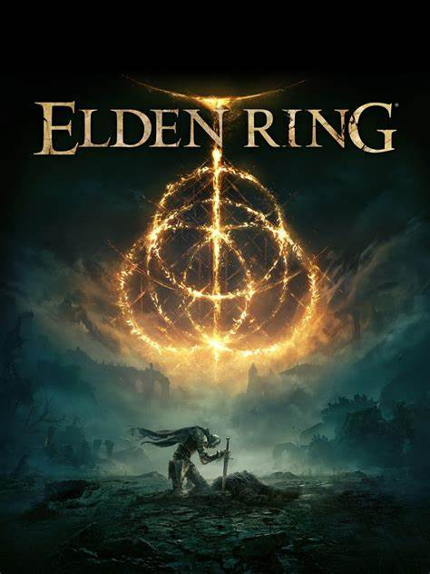
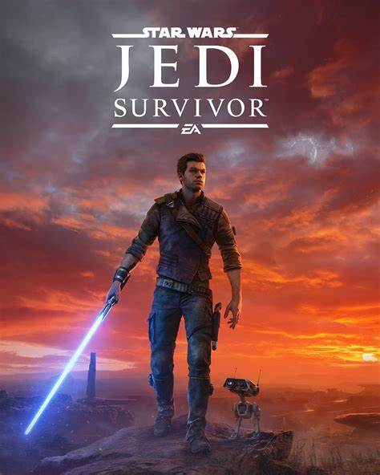

Recien salidos del horno
Armored Core VI: Fires of Rubicon
Basándose en el conocimiento adquirido durante el desarrollo conjunto de sus títulos recientes, Bandai Namco Entertainment y FromSoftware buscan ofrecer un nuevo juego de acción.
ARMORED CORE VI FIRES OF RUBICON combina la larga experiencia de FromSoftware en juegos mecánicos con su juego de acción característico para brindar una experiencia completamente nueva y de alto octanaje a la serie. En ARMORED CORE VI FIRES OF RUBICON, los jugadores ensamblarán su robot a partir de una amplia variedad de piezas y armamento para volar libremente a través de lugares de misión que redefinen la movilidad tridimensional.
Enfréntate a una oposición abrumadora superando y superando a tus enemigos con movimientos dinámicos que aprovechan al máximo el combate cuerpo a cuerpo y a distancia. Los jugadores pueden experimentar una acción frenética y trepidante que sólo se puede lograr con mechs.
Los mejores juegos de esta generacion
Hecha un vistazo a los mejores juegos que han salido en la generacion actual de consolas.
-
Elden Ring
 -
Sekiro

-
Star Wars: Jedi Survivor

Reseñas
Consulta las mejores reseñas proporcionado por nuestros usuarios de confianza
User: Juego: Calificacion: 0/10 Opinion:
Proxmios
Aqui puedes ver los siguentes juegos buenos que saldan en los proximos meses
Cosas de game pass xd